> Phishing
Définition
Le phishing est une technique d'ingénierie sociale où
un attaquant se fait passer pour une entité légitime , comme
une banque, un service en ligne ou une entreprise, dans le but de
tromper les victimes pour qu'elles divulguent des informations
sensibles telles que des identifiants de connexion, des numéros de
carte de crédit ou d'autres données personnelles.
Comment ça fonctionne ?
L'attaque de phishing se déroule généralement par le biais de
courriels ou de messages instantanés qui semblent provenir d'une
source fiable. Ces messages contiennent souvent un lien vers un site
web frauduleux qui imite un site légitime. Lorsque la victime clique
sur le lien et saisit ses informations sur ce faux site, celles-ci
sont envoyées directement à l'attaquant, qui peut ensuite les
utiliser pour accéder aux comptes de la victime ou effectuer des
transactions frauduleuses.
Les attaquants peuvent également utiliser des techniques comme le
spear phishing (ciblage spécifique d'une personne ou d'une
organisation) ou le whaling (ciblage de personnes de haut rang,
comme des PDG).
Exemple
Un exemple célèbre est l'attaque de phishing qui a visé les
utilisateurs de Gmail en 2017. Les utilisateurs recevaient un mail
semblant provenir de Google, leur demandant de vérifier leurs
informations de compte. Le lien les dirigeait vers une page web
imitant parfaitement la page de connexion de Google, où leurs
identifiants étaient capturés par les attaquants.
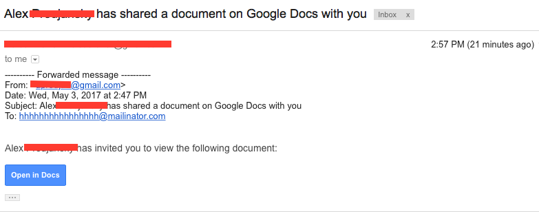
Les utilisateurs gmail ont reçu ce qui semble être un partage de
document. (https://arstechnica.com/information-technology/2017/05/dont-trust-oauth-why-the-google-docs-worm-was-so-convincing/ )
Sources
> Deepfake
Définition
Le deepfake est une technique qui utilise l'intelligence
artificielle (IA) pour créer des vidéos, des images ou des
enregistrements audio manipulés qui semblent réels, mais qui sont en
réalité faux. Ces contenus sont souvent utilisés pour imiter une
personne spécifique, en faisant dire ou faire à cette personne des
choses qu'elle n'a jamais dites ou faites.
Comment ça fonctionne ?
Les deepfakes sont créés en utilisant des techniques avancées de
machine learning, comme les réseaux de neurones convolutionnels et
les réseaux antagonistes génératifs (GANs). Le processus commence
par la collecte de nombreuses images, vidéos ou enregistrements
audio de la personne cible. Ces données sont ensuite utilisées pour
entraîner un modèle d'IA capable de générer des images, des vidéos
ou des voix synthétiques très réalistes.
Dans le cas des vidéos, par exemple, l'IA peut superposer le visage
de la personne cible sur le corps d'une autre personne dans une
vidéo, tout en synchronisant les mouvements des lèvres et les
expressions faciales pour correspondre à un dialogue fabriqué. Le
résultat final est une vidéo qui semble authentique, mais qui est en
réalité entièrement manipulée.
Sources
> IDN Attack
Définition
L'attaque IDN (Internationalized Domain Name) exploite les
caractères similaires ou identiques provenant de différents
alphabets pour créer des noms de domaine qui semblent légitimes,
mais qui redirigent en réalité les utilisateurs vers des sites web
malveillants. Ce type d'attaque est souvent utilisé pour le
phishing , car il est difficile de distinguer
visuellement le faux domaine du vrai.
Comment ça fonctionne ?
Les noms de domaine IDN permettent l'utilisation de caractères non
latins, comme ceux de l'alphabet cyrillique, chinois ou arabe. Les
attaquants enregistrent un nom de domaine en utilisant des
caractères qui ressemblent visuellement à des lettres latines, mais
qui sont en réalité différents. Par exemple, un attaquant pourrait
remplacer le "a" de "apple.com" par "а" en cyrillique (qui ressemble
beaucoup à la lettre "a" en latin) pour créer un domaine comme
"аррle.com". Les utilisateurs qui ne remarquent pas cette subtilité
peuvent être dirigés vers un site frauduleux conçu pour voler leurs
informations sensibles.
Exemple
En 2017, un chercheur en sécurité a démontré la gravité des attaques
IDN en enregistrant un domaine "аррӏе.com" (utilisant des caractères
cyrilliques ressemblant à "apple.com"). Les navigateurs non protégés
dirigeaient les utilisateurs vers une page de phishing parfaitement
imitant celle d'Apple, où les victimes pouvaient potentiellement
divulguer leurs identifiants Apple ID.
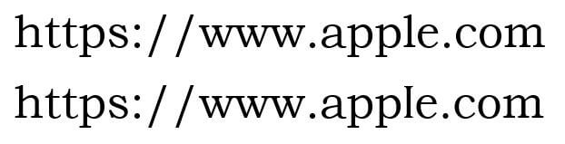
Les deux sites ont l'air tous les deux légitimes, cependant l'un
deux est une page de phishing (https://www.blazeinfosec.com/post/homographs-attack/ )
Sources
> Ransomware
Définition
Le ransomware est un type de malware qui chiffre les fichiers de la
victime, rendant ses données inaccessibles. Les attaquants demandent
ensuite une rançon, généralement en cryptomonnaie, pour fournir la
clé de déchiffrement nécessaire à la récupération des données.
Comment ça fonctionne ?
L'attaque par ransomware commence généralement par une infection du
système, souvent via un e-mail de phishing contenant une pièce
jointe malveillante, un lien vers un site compromis, ou un
téléchargement de logiciel infecté. Une fois le ransomware installé,
il commence à chiffrer les fichiers sur l'ordinateur de la victime,
rendant les données inaccessibles.
Après le chiffrement, le ransomware affiche un message informant la
victime que ses fichiers ont été chiffrés et qu'elle doit payer une
rançon pour les récupérer. Le paiement est souvent exigé en
cryptomonnaie pour préserver l'anonymat des attaquants. Dans
certains cas, si la rançon n'est pas payée dans un délai imparti,
les fichiers peuvent être définitivement perdus ou la rançon peut
augmenter.
Certaines attaques de ransomware menacent également de divulguer les
données volées si la rançon n'est pas payée.
Exemple
En 2017, le ransomware WannaCry a infecté des centaines de milliers
de systèmes dans le monde entier en exploitant une vulnérabilité du
système d'exploitation Windows. L'attaque a causé des perturbations
majeures, notamment dans les hôpitaux britanniques, où de nombreux
services ont été interrompus. Les victimes ont été invitées à payer
une rançon en Bitcoin pour récupérer l'accès à leurs fichiers.
WannaCry, 2017 (https://fr.wikipedia.org/wiki/WannaCry )
Sources
> Virus
Définition
Un virus informatique est un type de malware qui se reproduit en
infectant des fichiers ou des programmes sur un ordinateur. Il
s'auto-replie en attachant son code à des fichiers exécutables, des
documents ou des programmes légitimes. Lorsqu'un fichier infecté est
ouvert ou exécuté, le virus se propage et peut causer des dommages
au système, comme la corruption de données, la perte de fichiers ou
la lenteur du système.
Exemple
Un exemple célèbre de virus est le ILOVEYOU qui a été diffusé en
2000. Ce virus se propageait via des mails avec un objet attirant,
"I LOVE YOU". En ouvrant la pièce jointe, les utilisateurs
infectaient leur propre système et envoyaient automatiquement le
virus à tous les contacts de leur carnet d'adresses. L'attaque a
provoqué d'importantes pertes financières et une perturbation
mondiale.
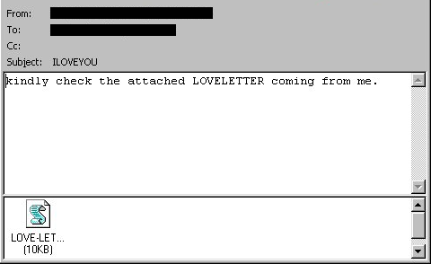
Loveletter, 2000 (https://fr.wikipedia.org/wiki/I_love_you_%28ver_informatique%29 )
Sources
> Cheval de Troie
Définition
Un cheval de Troie est un type de malware qui se fait passer pour un
logiciel légitime ou inoffensif pour tromper les utilisateurs et les
inciter à l’installer. Une fois activé, il peut effectuer diverses
actions malveillantes sans que l'utilisateur s'en rende compte,
telles que l'installation d'autres logiciels malveillants,
l'espionnage, le vol de données ou le contrôle à distance de
l'ordinateur.
Exemple
L'un des chevaux de Troie les plus connus est Zeus, découvert en
2007. Zeus a été utilisé pour voler des informations bancaires et
des identifiants en infectant des millions d'ordinateurs. Il a été
distribué principalement via des campagnes de phishing, où les
utilisateurs étaient incités à ouvrir des pièces jointes ou des
liens malveillants. Une fois installé, Zeus capturait les frappes au
clavier et redirigeait les utilisateurs vers de faux sites web pour
voler leurs identifiants bancaires.
Le Cheval de Troie, Huile sur Toile, Henri-Paul Motte (1874)
Sources
> Spyware
Définition
Le spyware est un logiciel malveillant conçu pour espionner
l'utilisateur à son insu. Il collecte des informations sensibles
telles que les mots de passe, les données de navigation, les
adresses mails, les informations bancaires, et peut même enregistrer
les frappes au clavier. Ces données sont ensuite envoyées à
l'attaquant, qui peut les utiliser à des fins malveillantes, comme
le vol d'identité, la fraude financière ou la surveillance.
Comment ça fonctionne ?
Les spywares s'installent généralement sur un système de manière
discrète. Voici comment ils fonctionnent :
Infection : Le spyware est souvent installé en même temps
que des logiciels gratuits, des applications douteuses, ou via des
vulnérabilités dans le navigateur web.
Collecte de données : Une fois installé, le spyware
fonctionne en arrière-plan, collectant divers types
d'informations. Cela peut inclure l'historique de navigation, les
frappes au clavier, les informations de connexion, et les données
personnelles stockées sur l'ordinateur.
Transmission des données : Les informations recueillies
sont envoyées à l'attaquant. L'attaquant peut ensuite utiliser ces
données pour des activités malveillantes, telles que l'usurpation
d'identité, l'accès non autorisé à des comptes, ou la revente des
informations sur le marché noir.
Impact sur le système : En plus de voler des informations,
les spywares peuvent également ralentir le système, provoquer des
plantages, ou modifier les paramètres du navigateur (comme la page
d'accueil ou les moteurs de recherche par défaut).
Exemple
Un exemple connu de spyware est CoolWebSearch, qui a infecté de
nombreux ordinateurs au début des années 2000. Ce logiciel espion
modifiait les paramètres du navigateur, redirigeait les utilisateurs
vers des sites web malveillants, et surveillait leurs habitudes de
navigation pour collecter des informations. Il était
particulièrement difficile à supprimer, car il réinstallait ses
composants après chaque tentative de suppression.
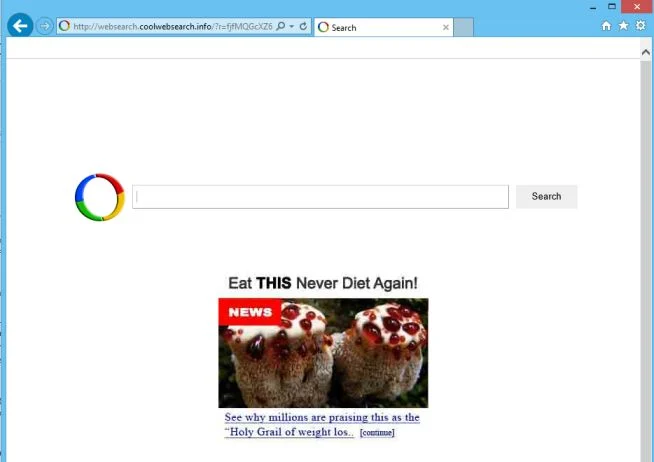
Moteur de recherche CoolWebSearch (image reprise de
https://malwaretips.com/blogs/websearch-coolwebsearch-info-removal/ ), (https://fr.wikipedia.org/wiki/CoolWebSearch )
Sources
> Adware
Définition
L'adware est un logiciel indésirable conçu pour afficher des
publicités sur votre ordinateur, souvent sous forme de fenêtres
pop-up ou de bannières publicitaires intégrées à d'autres
programmes. Bien qu'il ne soit pas toujours malveillant, l'adware
est souvent perçu comme nuisible car il collecte des données sur les
habitudes de navigation de l'utilisateur pour cibler les publicités
et peut entraîner une dégradation des performances du système.
Comment ça fonctionne ?
Installation : L'adware est souvent installé à l'insu de
l'utilisateur lorsqu'il télécharge des logiciels gratuits ou des
applications douteuses. Il peut également être installé via des
sites web non sécurisés ou en tant que partie d'un package
logiciel où il est inclus par défaut.
Affichage de publicités : Une fois installé, l'adware
commence à afficher des publicités, souvent sous forme de fenêtres
pop-up, de bannières, ou de redirections vers des sites web
publicitaires. Ces annonces sont souvent générées en fonction des
données collectées sur les habitudes de navigation de
l'utilisateur.
Collecte de données : L'adware surveille les activités en
ligne de l'utilisateur, telles que les sites visités, les
recherches effectuées, et les clics sur les publicités. Ces
informations sont utilisées pour personnaliser les annonces ou
peuvent être vendues à des tiers pour un profit.
Impact sur le système : L'adware peut ralentir le système,
consommer de la bande passante, et rendre l'expérience de
navigation désagréable en affichant des publicités de manière
intrusive. Dans certains cas, il peut également ouvrir des portes
aux logiciels malveillants plus dangereux.
Exemple
Un exemple d'adware bien connu est Gator, qui était populaire dans
les années 2000. Gator s'installait souvent avec d'autres logiciels
gratuits et affichait des publicités ciblées en fonction des
habitudes de navigation de l'utilisateur. Il collectait également
des données sur les utilisateurs à des fins de marketing sans leur
consentement explicite. Bien que Gator ne soit pas explicitement
malveillant, il a suscité des inquiétudes quant à la vie privée et à
la sécurité des données.
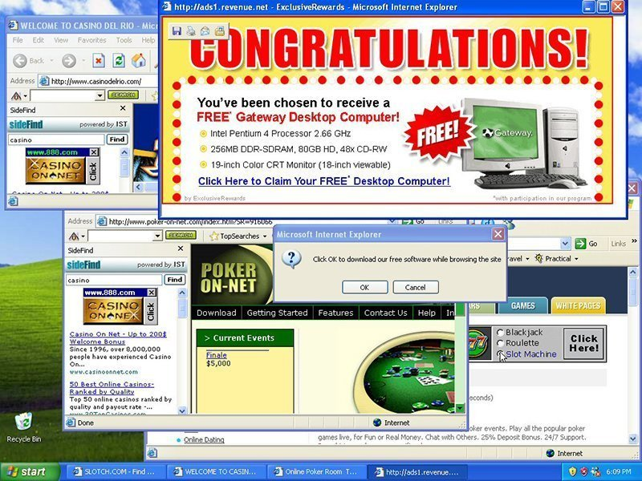
Ancienne version de Windows contaminée par un adware (image
reprise de
https://www.techtarget.com/searchsecurity/definition/adware )
Sources
> Botnets
Définition
Un botnet est un réseau de plusieurs ordinateurs infectés par un
logiciel malveillant, contrôlé par un attaquant à distance, souvent
appelé "botmaster" ou "herder". Les ordinateurs infectés, appelés
"bots" ou "zombies", sont utilisés collectivement pour mener des
activités malveillantes, telles que des attaques par déni de service
distribué (DDoS ), l'envoi de spam, le vol de
données, ou la propagation de logiciels malveillants
supplémentaires.
Comment ça fonctionne ?
Infection initiale : Les attaquants infectent des
ordinateurs en utilisant des logiciels malveillants, souvent
distribués via des mails de phishing, des téléchargements
malveillants, des exploits de vulnérabilités logicielles, ou des
sites web compromis.
Contrôle et communication : Une fois infectés, les
ordinateurs deviennent des bots, communiquant avec un serveur de
commande et de contrôle (C&C) géré par l'attaquant. Ce serveur
permet au botmaster de coordonner et contrôler les actions des
bots, généralement via des canaux chiffrés pour éviter la
détection.
Exécution d'attaques : Le botmaster peut alors utiliser le
réseau de bots pour diverses activités malveillantes.
Exemple
Un exemple notoire est le botnet Mirai, qui a fait les gros titres
en 2016. Mirai infectait des appareils IoT (Internet of Things)
comme les caméras de sécurité et les routeurs en exploitant des
identifiants par défaut ou des mots de passe faibles. Une fois sous
contrôle, il a été utilisé pour lancer des attaques DDoS massives,
notamment contre le fournisseur de DNS Dyn, provoquant
l'indisponibilité de nombreux sites web majeurs tels que Twitter,
Reddit, et Netflix.
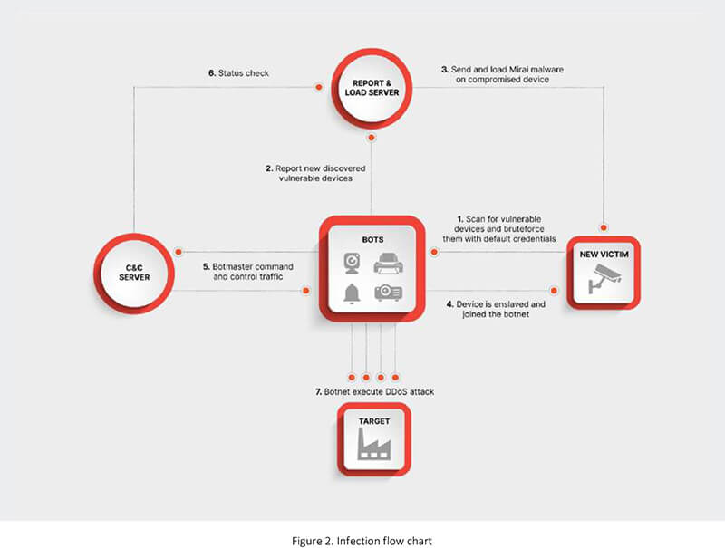
Organigramme de l'infection (https://www.cyfirma.com/blogs/mirai-the-botnet-that-made-iot-dangerous/ )
Sources
> DDoS
Définition
Une attaque par Déni de Service Distribué (DDoS) vise à rendre un
service, un serveur ou un réseau indisponible pour ses utilisateurs
légitimes. Cela est réalisé en inondant la cible avec un volume
massif de trafic ou de requêtes simultanées provenant de multiples
sources. Les attaques DDoS exploitent souvent des
botnets , qui sont des réseaux de machines
compromises, pour générer ce trafic et submerger la capacité de la
cible à gérer les requêtes.
Comment ça fonctionne ?
Compromission des machines : Les attaquants infectent un
grand nombre d'ordinateurs ou d'appareils connectés à Internet
(comme des routeurs ou des objets connectés) avec un logiciel
malveillant, les transformant en bots contrôlés à distance.
Coordination de l'attaque : L'attaquant utilise un serveur
de commande et de contrôle (C&C) pour coordonner les bots. Ces
machines infectées agissent alors de manière synchronisée pour
envoyer un volume massif de trafic vers la cible, qui peut être un
site web, un serveur, ou une infrastructure réseau.
Inondation de trafic : Les bots envoient un grand nombre de
requêtes ou de paquets de données à la cible. Les types courants
d'attaques DDoS incluent :
Attaques de volume : Inondent la cible avec un trafic
massif, comme le UDP flood ou le ICMP flood, visant à saturer
la bande passante.
Attaques de protocole : Exploitent les failles dans les
protocoles réseau, comme le SYN flood, pour épuiser les
ressources de la cible.
Attaques applicatives : Visent les couches supérieures,
comme les serveurs web (HTTP flood), pour surcharger la
capacité de traitement de l'application.
Résultat : L'attaque submerge les ressources de la cible,
provoquant un ralentissement significatif ou un blocage total du
service, empêchant les utilisateurs légitimes d'y accéder.
Exemple
Un exemple notable est l'attaque DDoS contre Dyn en octobre 2016.
Cette attaque, menée par le botnet Mirai, a inondé le fournisseur de
services DNS avec un trafic massif, provoquant des perturbations
majeures sur de nombreux sites web importants comme Twitter, Reddit,
et Spotify. L'attaque exploitait des appareils IoT vulnérables pour
générer le volume de trafic nécessaire à la surcharge du service DNS
de Dyn, rendant des parties importantes d'Internet inaccessibles
pendant plusieurs heures.
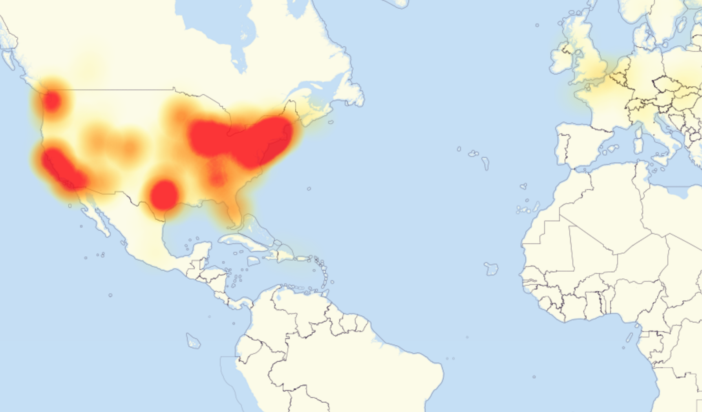
Carte des zones les plus touchées par l'attaque le 21 octobre 2016
à 11h45 (https://fr.wikipedia.org/wiki/Cyberattaque_de_2016_contre_Dyn )
Sources
> Man in the Middle
Définition
Une attaque de l'Homme du Milieu (MitM) est une cyberattaque où un
attaquant intercepte et éventuellement altère la communication entre
deux parties sans qu'elles s'en aperçoivent. L'attaquant se
positionne furtivement entre le client et le serveur, espionnant ou
manipulant les informations échangées pour voler des données
sensibles comme les identifiants de connexion, les numéros de carte
de crédit, ou d'autres informations confidentielles.
Comment ça fonctionne ?
Interception : L'attaquant intercepte les communications
entre deux parties. Cela peut se produire de différentes manières
:
Attaque WiFi : Dans un réseau WiFi non sécurisé,
l'attaquant peut intercepter le trafic entre l'utilisateur et
le routeur.
ARP Spoofing : L'attaquant envoie de fausses
informations d'adresse de contrôle d'accès (ARP) sur un réseau
local pour lier son adresse MAC à l'adresse IP de la victime,
interceptant ainsi le trafic.
DNS Spoofing : L'attaquant modifie les enregistrements
DNS pour rediriger le trafic vers un serveur sous son
contrôle.
Décryptage et manipulation : L'attaquant peut déchiffrer le
trafic s'il n'est pas chiffré, ou exploiter des faiblesses dans le
protocole de chiffrement utilisé. Il peut ensuite lire, modifier
ou injecter des données dans la communication.
Écoute clandestine : L'attaquant espionne
silencieusement la conversation pour voler des informations
comme les identifiants et les mots de passe.
Altération : L'attaquant modifie les messages en
transit, comme changer les détails d'une transaction
financière ou rediriger les utilisateurs vers de faux sites
web.
Relayage des communications : L'attaquant relaie les
communications entre les deux parties, les faisant croire qu'elles
interagissent directement entre elles, tout en interceptant et
potentiellement altérant les messages.
Exemple
Un exemple d'attaque MitM s'est produit en 2015, connu sous le nom
de FREAK attack (Factoring RSA Export Keys). Cette attaque
exploitait une vulnérabilité dans le chiffrement SSL/TLS, permettant
aux attaquants de forcer les navigateurs et les serveurs à utiliser
un chiffrement plus faible. Une fois le chiffrement affaibli,
l'attaquant pouvait intercepter et déchiffrer les communications
entre le client et le serveur, exposant les données sensibles telles
que les identifiants de connexion et les informations financières.
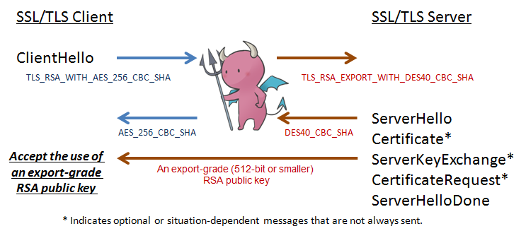
MiTM et rétrogradation de l'algorithme de chiffrement (https://www.hitachi.com/hirt/publications/hirt-pub15003/index.html )
Sources
> Sniffing
Définition
Le sniffing est une technique utilisée pour intercepter et
surveiller le trafic réseau. Cette pratique peut être légale ou
malveillante. Dans un contexte malveillant, les attaquants utilisent
des outils appelés "sniffers" ou "renifleurs de paquets" pour
capturer et analyser les données en transit sur un réseau, telles
que les identifiants de connexion, les mots de passe, les courriels,
et d'autres informations sensibles.
Comment ça fonctionne ?
Installation du sniffer : L'attaquant installe un logiciel
de sniffing sur un réseau, soit en compromettant un appareil sur
le réseau (comme un ordinateur ou un routeur), soit en connectant
un appareil à un point d'accès WiFi non sécurisé.
Capture de paquets : Le sniffer intercepte les paquets de
données qui circulent sur le réseau. Ces paquets contiennent des
informations diverses, comme des requêtes HTTP, des courriels, ou
des données de connexion.
Analyse des données : Les paquets interceptés sont ensuite
analysés. Les attaquants recherchent des informations sensibles
telles que des noms d'utilisateur, des mots de passe, des adresses
e-mail, des numéros de carte de crédit, ou d'autres données
personnelles.
Exploitation : Les informations collectées peuvent être
utilisées pour divers actes malveillants, comme l'usurpation
d'identité, l'accès non autorisé à des comptes, ou la surveillance
des communications.
Exemple :
Un exemple courant de sniffing est l'attaque WiFi public sniffing,
où un attaquant configure un sniffer sur un réseau WiFi public,
comme ceux dans les cafés ou les aéroports. Les utilisateurs se
connectant à ces réseaux sans utiliser de chiffrement (comme un VPN)
risquent d'avoir leurs données interceptées. Les attaquants peuvent
ainsi capturer des informations de connexion non chiffrées, des
sessions web, ou d'autres données transmises en clair sur le réseau.
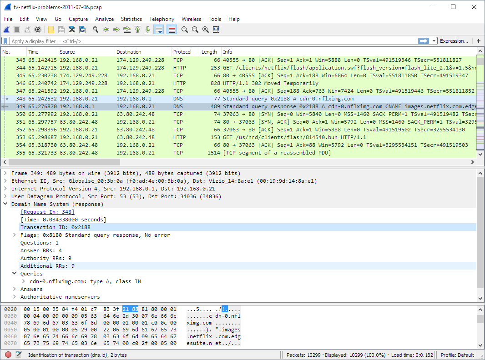
Exemple de sniffing avec Wireshark (https://www.wireshark.org/ )
Sources
> SQL Injection
Définition
L'injection SQL (Structured Query Language) est une vulnérabilité de
sécurité qui permet à un attaquant d'insérer ou de "injecter" du
code SQL malveillant dans une requête exécutée par une base de
données. Cette attaque permet de manipuler les bases de données, par
exemple en accédant à des données sensibles, en modifiant ou
supprimant des informations, ou même en exécutant des commandes sur
le serveur.
Comment ça fonctionne ?
Point d'injection : L'attaque commence par identifier un
point d'entrée dans une application web où les entrées de
l'utilisateur sont incorporées dans les requêtes SQL. Les
formulaires de connexion, les champs de recherche, ou les
paramètres d'URL sont des cibles courantes.
Injection de code malveillant : L'attaquant injecte du code
SQL malveillant dans un champ de saisie. Si l'application ne
filtre pas correctement les entrées, ce code est intégré à la
requête SQL exécutée par la base de données.
Exécution de la requête : La base de données exécute la
requête modifiée, permettant à l'attaquant d'accéder à des données
non autorisées. Les attaques peuvent inclure :
Extraction de données : L'attaquant peut obtenir des
informations sensibles, telles que les identifiants de
connexion ou les données des utilisateurs.
Modification ou suppression de données : Modifier les
enregistrements existants ou supprimer des informations de la
base de données.
Exécution de commandes : Dans certains cas, l'attaquant
peut exécuter des commandes système sur le serveur hébergeant
la base de données.
Exploitation des données : Les informations obtenues par
l'attaquant peuvent être utilisées pour compromettre davantage le
système, voler des informations sensibles, ou détruire des
données.
Exemple
L'un des exemples les plus célèbres d'injection SQL est l'attaque
contre Sony Pictures en 2011. Les attaquants ont exploité une
vulnérabilité d'injection SQL pour accéder aux serveurs de Sony et
ont volé des informations personnelles, y compris des noms, des
adresses, et des mots de passe de millions de clients. Cette attaque
a mis en lumière l'importance de sécuriser les applications web
contre les injections SQL.
VIDEO
SQL Injections are scary!! (hacking tutorial for beginners)
(Chaîne Youtube : NetworkChuck) (https://www.youtube.com/watch?v=2OPVViV-GQk )
Sources
> Cross-Site Scripting (XSS)
Définition
Le Cross-Site Scripting (XSS) est une vulnérabilité qui permet à un
attaquant d'injecter du code malveillant, généralement JavaScript,
dans les pages web visualisées par d'autres utilisateurs. Cela peut
entraîner diverses conséquences, telles que le vol de cookies de
session, la manipulation de l'interface utilisateur, le
redirectionnement vers des sites malveillants, ou l'exécution
d'actions à l'insu de l'utilisateur.
Comment ça fonctionne ?
Injection de code : L'attaquant identifie un point d'entrée
dans une application web où les entrées de l'utilisateur ne sont
pas correctement filtrées ou validées. Il injecte un script
malveillant dans un champ de saisie, comme un champ de commentaire
ou de recherche.
Stocké vs Réfléchi vs DOM :
XSS stocké : Le script malveillant est stocké sur le
serveur de l'application web, par exemple dans une base de
données. Lorsqu'un utilisateur accède à une page qui affiche
le contenu stocké (comme un commentaire), le script est
exécuté dans le navigateur de l'utilisateur.
XSS réfléchi : Le script malveillant est injecté dans
la requête HTTP et renvoyé immédiatement par le serveur dans
la réponse. Cela se produit souvent via des liens malveillants
que les utilisateurs sont incités à cliquer.
XSS basée sur le DOM : Le script malveillant est
injecté directement dans la structure DOM de la page web via
le navigateur, sans jamais passer par le serveur. L'attaquant
manipule le DOM via des variables JavaScript accessibles ou
des méthodes client, et le script est exécuté localement dans
le navigateur de l'utilisateur en fonction de l'état du DOM,
souvent en exploitant des éléments comme `document.location`
ou `document.write`.
Exécution du script : Lorsque le script est exécuté dans le
navigateur de la victime, il peut effectuer diverses actions au
nom de l'utilisateur sans son consentement :
Vol de cookies : Le script peut accéder aux cookies de
session de l'utilisateur, permettant à l'attaquant de voler
l'identité de la session.
Détournement de l'interface : Le script peut manipuler
l'interface utilisateur pour tromper l'utilisateur et
l'inciter à fournir des informations sensibles.
Redirection : L'utilisateur peut être redirigé vers des
sites web malveillants.
Exploitation : L'attaquant utilise les informations volées
ou les actions effectuées par le script pour poursuivre ses
objectifs, tels que le vol d'identités, l'accès à des comptes, ou
l'installation de logiciels malveillants.
Exemple
Un exemple célèbre d'attaque XSS est l'attaque contre MySpace en
2005, menée par Samy Kamkar. Il a créé un ver XSS, connu sous le nom
de "Samy Worm", qui a exploité une vulnérabilité XSS sur MySpace. Le
script s'exécutait chaque fois qu'un utilisateur visitait le profil
de Samy, puis ajoutait automatiquement Samy comme ami et copié le
script malveillant sur le profil de l'utilisateur infecté. En moins
de 24 heures, plus d'un million de profils MySpace ont été infectés,
démontrant l'ampleur des dégâts qu'une attaque XSS peut causer.
Le ver Samy ajoutait cette phrase à la fin de certaines
informations "but most of all, samy is my hero." (http://vsb2006001.pbworks.com/w/page/23221389/%22Samy%22%20Myspace%20Worm
(connexion non sécurisée))
Sources
> Zero-Day Exploit
Définition
Un Zero-Day exploit est une attaque qui tire parti d'une
vulnérabilité inconnue dans un logiciel, un matériel, ou un système.
Le terme "Zero-Day" signifie que les développeurs du logiciel n'ont
eu "zéro jour" pour corriger ou contrer la vulnérabilité, car elle
n'a pas encore été découverte ou rendue publique. Les attaques
Zero-Day sont particulièrement dangereuses car elles exploitent des
failles pour lesquelles aucune solution ou correctif n'est encore
disponible.
Comment ça fonctionne ?
Découverte de la vulnérabilité : L'attaquant découvre une
vulnérabilité dans un logiciel, un système d'exploitation, ou un
matériel. Cette vulnérabilité n'est pas encore connue des
développeurs du logiciel ni des organismes de sécurité.
Développement de l'exploit : L'attaquant développe un code
exploitant cette vulnérabilité. Cela peut inclure la création d'un
malware, d'un script ou d'une autre méthode permettant de tirer
parti de la faille.
Déploiement de l'attaque : L'exploit est ensuite utilisé
pour attaquer des cibles spécifiques ou est déployé de manière
plus large. Les attaquants peuvent propager l'exploit via des
e-mails de phishing, des sites web infectés, des téléchargements
de logiciels, ou d'autres vecteurs de distribution.
Exploitation de la vulnérabilité : Comme la vulnérabilité
est inconnue et sans correctif, le logiciel ou le système ciblé
est généralement incapable de détecter ou de bloquer l'attaque.
L'attaquant peut alors exécuter des actions malveillantes, telles
que l'installation de malwares, l'exécution de commandes à
distance, le vol de données, ou la compromission du système.
Révélation publique : Souvent, les attaques Zero-Day sont
découvertes lorsque des incidents de sécurité se produisent,
incitant les développeurs et les chercheurs en sécurité à analyser
et identifier la vulnérabilité. Une fois révélée, un correctif est
généralement développé et déployé, mais les systèmes restent
vulnérables jusqu'à ce que la mise à jour soit appliquée.
Exemple
L'un des Zero-Day exploits les plus connus est Stuxnet, découvert en
2010. Ce malware ciblait spécifiquement les systèmes SCADA utilisés
dans les installations industrielles, y compris les centrifugeuses
nucléaires en Iran. Stuxnet exploitait plusieurs vulnérabilités
Zero-Day dans Windows pour s'infiltrer dans les systèmes et altérer
le fonctionnement des machines sans détection. Cette attaque a
montré l'ampleur des dommages que peuvent causer les exploits
Zero-Day, notamment dans des infrastructures critiques.
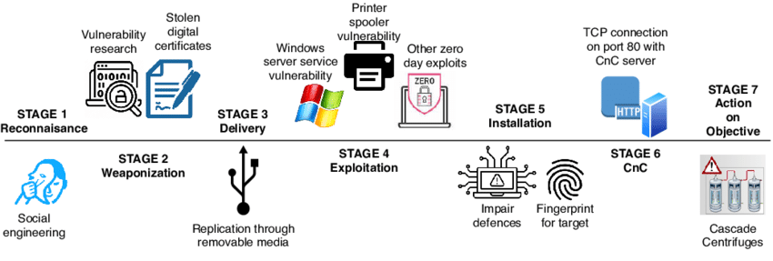
Illustration de l'attaque Stuxnet (https://www.researchgate.net/figure/Stuxnet-computer-virus-attack_fig8_349633101 )
Sources
> Buffer Overflow
Définition
Un buffer overflow (dépassement de tampon) est une vulnérabilité de
sécurité qui se produit lorsque un programme écrit plus de données
dans un espace de mémoire (tampon) que ce que ce dernier est capable
de contenir. Cela peut corrompre les données adjacentes, entraîner
un comportement imprévu du programme, ou permettre à un attaquant
d'exécuter du code malveillant. Cette faille est souvent exploitée
pour compromettre la sécurité des systèmes, car elle peut permettre
une prise de contrôle à distance.
Comment ça fonctionne ?
Stockage de données dans un tampon : Les programmes
informatiques utilisent des tampons pour stocker temporairement
des données en mémoire. Un tampon a une taille fixe définie à
l'avance.
Dépassement du tampon : Un buffer overflow se produit
lorsque le programme essaie d'écrire plus de données dans le
tampon qu'il n'en peut contenir. Par exemple, si un tampon est
configuré pour contenir 8 octets et qu'une opération tente
d'écrire 16 octets, les 8 octets excédentaires "débordent" dans la
mémoire adjacente.
Corruption de la mémoire : Le débordement peut corrompre
des données importantes, telles que des pointeurs ou des variables
de contrôle, ce qui peut altérer le fonctionnement du programme.
Dans certains cas, l'attaquant peut injecter du code malveillant
dans la mémoire.
Exécution de code malveillant : En exploitant le
débordement, l'attaquant peut manipuler l'exécution du programme.
Par exemple, il peut rediriger le flux de contrôle du programme
pour exécuter son propre code. Cela peut permettre à l'attaquant
d'exécuter des commandes à distance, de lire des données
sensibles, ou de compromettre le système.
Exemple
Un exemple célèbre d'attaque par buffer overflow est l'exploitation
de la vulnérabilité dans le ver Morris en 1988. Le ver utilisait une
faille de buffer overflow dans le protocole de communication de
messagerie électronique Sendmail pour se propager. Il a infecté un
grand nombre de machines sur le réseau ARPANET, perturbant
considérablement le réseau. Plus récemment, de nombreuses
vulnérabilités buffer overflow ont été trouvées dans des logiciels
couramment utilisés, soulignant l'importance de protéger contre ce
type d'attaque.
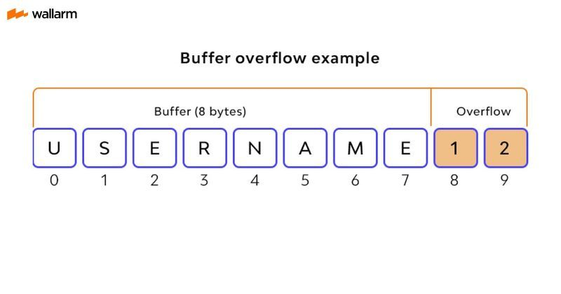
Exemple de Buffer Overflow (https://www.wallarm.com/what/buffer-overflow-attack-definition-types-use-by-hackers-part-1 )
Sources
> Attaque par canaux auxiliaires
Définition
Une attaque par canal auxiliaire est une méthode d'espionnage qui
exploite des informations indirectes ou accidentelles émanant d'un
système informatique pour compromettre sa sécurité. Plutôt que de
s'attaquer directement aux algorithmes cryptographiques ou au
logiciel, l'attaquant recueille des données comme les émissions
électromagnétiques, la consommation d'énergie, le bruit, ou le temps
d'exécution pour en déduire des informations sensibles, telles que
des clés de chiffrement.
Comment ça fonctionne ?
Observation des comportements physiques : L'attaquant
surveille les informations physiquement mesurables (énergie,
temps, rayonnement électromagnétique, chaleur, etc.) produites par
le système pendant son fonctionnement. Par exemple, une variation
dans la consommation d'énergie ou le temps de réponse pourrait
révéler des différences dans les opérations de chiffrement.
Corrélation avec des données sensibles : Les
caractéristiques observées sont ensuite corrélées avec des données
internes du système, comme les clés de chiffrement. Une fois que
l'attaquant a suffisamment d'informations, il peut reconstituer
des données sensibles, comme des mots de passe ou des clés
privées.
Exploitation de la faiblesse : L'attaquant utilise les
données obtenues pour pénétrer le système ou voler des
informations. Contrairement aux méthodes d'attaque
traditionnelles, il ne compromet pas directement les algorithmes
ou logiciels, mais exploite les "fuites" d'informations générées
pendant l'exécution normale.
Types d'attaques par canal auxiliaire
Analyse de la consommation d'énergie : Mesurer la
consommation d'énergie pendant des opérations cryptographiques
pour en déduire des clés ou d'autres informations.
Analyse du temps d'exécutions : Observer le temps pris par
un système pour effectuer certaines opérations, en particulier les
opérations cryptographiques, afin d'inférer des informations
sensibles.
Attaque par rayonnement électromagnétique : Capturer les
émissions électromagnétiques produites par un appareil
électronique et les analyser pour en extraire des données
confidentielles.
Analyse acoustique : Utiliser les sons émis par un appareil
(comme un disque dur ou un clavier) pour reconstituer des
informations.
Sources
> SCADA Attack (Supervisory Control and Data Acquisition)
Définition
Une attaque SCADA cible les systèmes de contrôle industriel utilisés
pour superviser et contrôler des infrastructures critiques telles
que les centrales électriques, les systèmes de distribution d'eau,
et les usines de fabrication. Ces systèmes sont essentiels pour le
fonctionnement de nombreuses industries et leur compromission peut
entraîner des interruptions de service, des dommages matériels, ou
des menaces pour la sécurité publique.
Comment ça fonctionne ?
Vulnérabilités du système : Les systèmes SCADA peuvent
présenter des failles de sécurité, comme des mots de passe par
défaut, des protocoles non sécurisés, ou un accès réseau non
protégé. Il n'est pas rare de trouver d'anciens OS non maintenus
dans les réseaux SCADA.
Accès non autorisé : : Un attaquant peut accéder au réseau
SCADA via des méthodes variées, telles que le phishing,
l'exploitation de failles de sécurité, ou même un accès physique
aux installations.
Manipulation des données : Une fois dans le système,
l'attaquant peut manipuler les données ou les commandes,
entraînant des actions non autorisées, comme le désengagement de
systèmes de sécurité, la modification des processus industriels,
ou même le déclenchement d'opérations dangereuses.
Impact sur l'infrastructure : Les conséquences d'une
attaque SCADA peuvent être graves, allant de la perte de
production et des pannes de service à des dommages physiques ou
des risques pour la sécurité des employés et du public.
Exemple
Un exemple célèbre d'attaque SCADA est le malware Stuxnet, qui a
ciblé les systèmes de contrôle industriel utilisés dans le programme
nucléaire iranien. Stuxnet a réussi à infiltrer les systèmes SCADA
pour manipuler les centrifugeuses, entraînant des dommages matériels
significatifs et démontrant la vulnérabilité des infrastructures
critiques face aux cyberattaques. Cette attaque a ouvert les yeux
sur les menaces potentielles posées aux systèmes SCADA à l'échelle
mondiale.
VIDEO
Stuxnet: The Cyber Weapon That Destroyed Iran's Nuclear Program
(Chaîne Youtube : Warographics) (https://www.youtube.com/watch?v=UtFqtA0X_hM )
Sources
> Supply Chain Attack
Définition
Une attaque de la chaîne d'approvisionnement (Supply Chain Attack)
est une méthode où un attaquant cible les vulnérabilités présentes
dans les produits ou services d'une entreprise, en s'introduisant
dans le réseau ou le système via un fournisseur ou un partenaire.
L'objectif est d'infiltrer une organisation en compromettant un
maillon de sa chaîne d'approvisionnement, comme un logiciel, un
matériel, ou un service tiers.
Comment ça fonctionne ?
Ciblage des fournisseurs : L'attaquant identifie un
fournisseur ou un partenaire de l'entreprise qui a un accès
privilégié ou qui fournit des logiciels, du matériel, ou des
services.
Compromission du fournisseur : L'attaquant compromet les
systèmes du fournisseur en exploitant des vulnérabilités, en
injectant du malware dans les mises à jour logicielles, ou en
utilisant des méthodes de phishing pour obtenir des informations
d'identification.
Propagation du malware : Une fois que le fournisseur est
compromis, le malware ou l'accès non autorisé est transmis à
l'entreprise cible, souvent via des mises à jour logicielles ou
des produits contenant du code malveillant.
Exploitation de l'accès : L'attaquant peut alors exploiter
cet accès pour voler des données sensibles, espionner des
activités, ou lancer d'autres attaques au sein de l'organisation
cible.
Exemple
Un exemple marquant d'attaque de la chaîne d'approvisionnement est
l'attaque SolarWinds révélée en 2020. Des cybercriminels ont
compromis les mises à jour de logiciels de SolarWinds, un
fournisseur de logiciels de gestion des systèmes informatiques. En
injectant un code malveillant dans les mises à jour de son produit,
ils ont réussi à infiltrer des milliers d'organisations, y compris
des agences gouvernementales américaines, ce qui a permis un accès
non autorisé à des données sensibles et à des systèmes critiques.
Cette attaque a mis en lumière la vulnérabilité des chaînes
d'approvisionnement et l'importance de la sécurité dans les
relations avec les fournisseurs.
VIDEO
Le plus grand CYBERESPIONNAGE du 21e siècle ! (SolarWinds) (Chaîne
Youtube : Numerama) (https://www.youtube.com/watch?v=3e_RzLCPM-Y )
Sources